Ethercat config
1. From LinuxCNC 2.9.8 Debian 13 Installation via EtherCat Master to the First Motor Movement
1. LinuxCNC Installation
1.1 The installation applies to LinuxCNC 2.9.8 Debian 13 Trixie.
Download the image:
https://www.linuxcnc.org/iso/linuxcnc_2.9.8-amd64.hybrid.iso
Mount the ISO to a pendrive, e.g., using the Rufus program.
1.2 If Linux will be a second system, you can first create unallocated space on the disk in Windows:
Press Win + X and select Disk Management.
Shrink the partition (if you want to keep data).
In the Disk Management window, find the partition you want to shrink.
Right-click it and select Shrink Volume.
Enter by how many MB you want to shrink the partition.
That much space will become unallocated.
Click Shrink.
1.3 Change the boot order in BIOS to set the pendrive as first.
After booting from the pendrive, select install LinuxCNC.
Manual disk selection.
Partition selection: one EFI system partition is required, a swap partition of 4–16 GB, and an ext4 partition with
the mount point /.
Use as: EFI system partition.
Use as: swap partition 4–16 GB.
Use as: ext4 partition with mount point /.
*If you have a Legacy BIOS, the system installs using the disk's MBR, and no EFI partition is created.
*If the EFI partition already exists, select use as system partition and do not format.
*The EFI partition must contain a Debian entry for the system to boot from the disk.
1.4 If GRUB does not want to install, choose Finish without a bootloader.
However, in this situation, leave the pendrive so that Linux can boot again.
And select at the top: Live System.
For BIOS UEFI:
To install GRUB via the Internet.
1.5 In Live Linux, connect to the Internet via the toolbar.
1.6 Mounting and operating on system partitions to add an entry to EFI.
Check the partitions:
lsblk -f
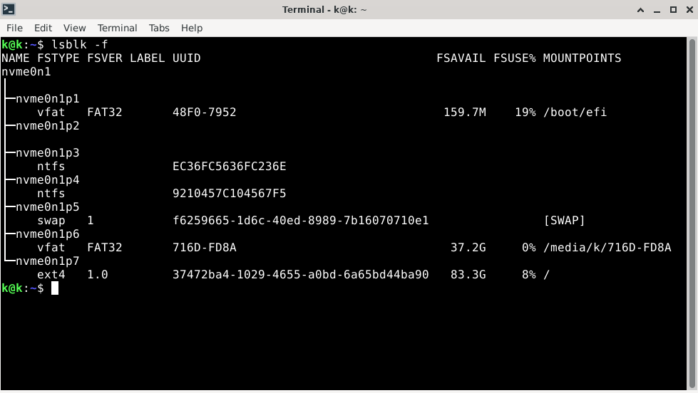
Mount the EFI partition and the /ext4 partition by their names, in this case:
sudo mkdir -p /mnt
sudo mount /dev/nvme0n1p7 /mnt/ Partition /EXT4
sudo mkdir -p /mnt/boot/efi
sudo mount /dev/nvme0n1p1 /mnt/boot/efi Partition EFI
Mount the system directories in order:
sudo mount --bind /dev /mnt/dev
sudo mount --bind /proc /mnt/proc
sudo mount --bind /sys /mnt/sys
sudo mount --bind /run /mnt/run
Bind internet to partitions:
sudo mkdir -p /mnt/etc
sudo mount --bind /etc/resolv.conf /mnt/etc/resolv.conf
Check internet:
ping -c 3 deb.debian.org
Now GRUB installation:
Enter Debian (ch root)
sudo chroot /mnt
The prompt should appear as: root@debian:/#
Install GRUB
apt update
apt install grub-efi-amd64 efibootmgr
Install GRUB to EFI:
grub-install --target=x86_64-efi --efi-directory=/boot/efi --bootloader-id=Debian
Optional, Generate the menu
update-grub
Exit and clean up
exit
sudo umount -R /mnt
reboot
Now the entry in EFI (/boot/efi/EFI/Debian/) has already been created, Linux will boot normally.
End of installation – remove the pendrive; at startup, you can access the boot manager by pressing, e.g., F7,
depending on the BIOS.
*If it's a Legacy BIOS, the commands are as follows:
Mount the / partition (EXT4) by its device name, in this case:
sudo mkdir -p /mnt
sudo mount /dev/nvme0n1p7 /mnt
Bind the system directories one by one:
sudo mount --bind /dev /mnt/dev
sudo mount --bind /proc /mnt/proc
sudo mount --bind /sys /mnt/sys
sudo mount --bind /run /mnt/run
Bind internet to partition:
sudo mkdir -p /mnt/etc
sudo mount --bind /etc/resolv.conf /mnt/etc/resolv.conf
Enter Debian (ch root)
sudo chroot /mnt
Install GRUB to the MBR of the entire disk (replace nvme0n1 with your disk's device name):
apt update && apt install -y grub-pc && grub-install /dev/nvme0n1 && update-grub
Optionally, regenerate the GRUB menu:
update-grub
Exit and clean up
exit
sudo umount -R /mnt
reboot
2. Preparing the System for EtherCAT
2.1 Start the system
2.2 Network card configuration
Click on the network settings in the top right corner.
Change the first 2 tabs, disable the rest
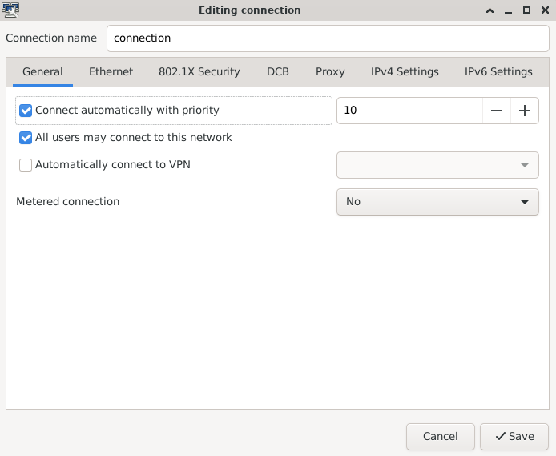
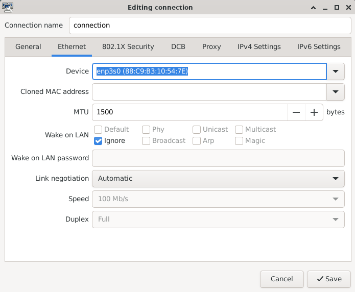
2.3 Disable NETWORKMANAGER for the network card so that EtherCAT has exclusive access.
Find the name of the card:
ip link
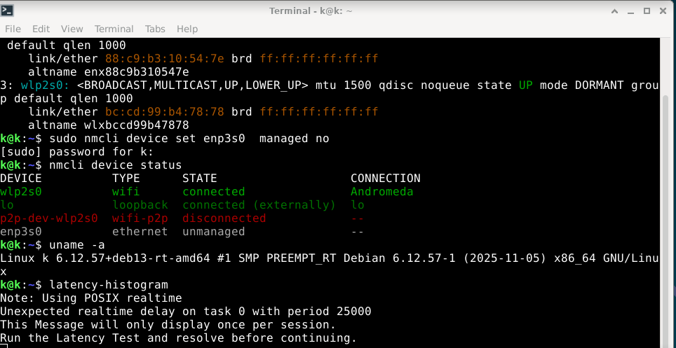
Disable the Manager, replace enp3s0 with your own card name:
sudo nmcli device set enp3s0 managed noCheck if it has been unmanaged:
nmcli device status
2.4 System update
sudo apt update
sudo apt upgrade
Continue? [Y/n] y
2.5 Git installation
sudo apt update
sudo apt install git
git --version
3. EtherCAT Master Installation
Preparing the system for EtherCAT
sudo apt update
sudo apt install linuxcnc-ethercat
3.1 Check the MAC address of the network card
ip a
Then fill in
sudo geany /etc/ethercat.conf
MASTER0_DEVICE="................"
DEVICE_MODULES="generic"
And save and close.
3.2 First EtherCAT startup, step by step:
sudo systemctl enable ethercat.service
sudo systemctl start ethercat.service
sudo systemctl status ethercat.service
sudo chmod 666 /dev/EtherCAT0
3.3 Grant permission for EtherCAT Master at system startup
sudo geany /etc/udev/rules.d/99-ethercat.rules
Paste:
KERNEL=="EtherCAT[0-9]", MODE="0777"
Save and close.
Then type
sudo udevadm control --reload-rules
Restart the computer
4. Connecting servo drives
At this stage, you can connect the EK1100 and the servo drivers to power, connect to the network card:
Reset any errors on the servo drivers if they occur, according to the user manual.
Then check:
sudo ethercat master
sudo ethercat slaves
uname -a
latency-histogram
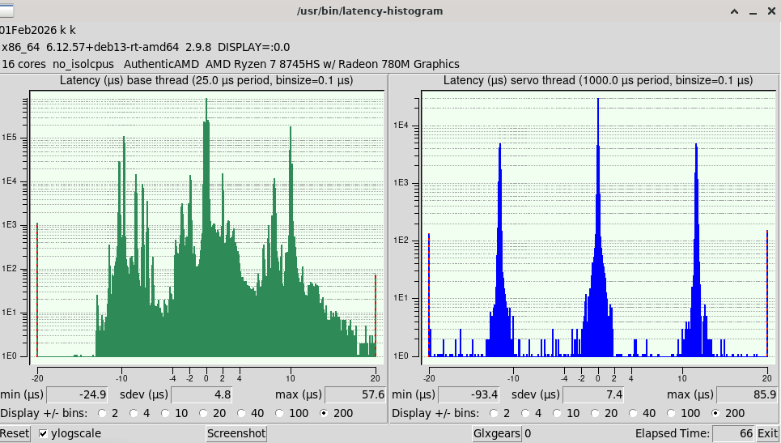
After testing:
If the servo drivers are in the PREOP state, you can de-energize them:
sudo ethercat states INITand turn off the power
5. Connecting network card to EtherCAT master
The network card can be connected to the EtherCAT master if it is recognized by it.
Supported cards are mainly Intel with the igb, igc, 1000, or 1000e driver.
This ensures greater compatibility with real-time operations and allows the card to work exclusively under the
control of EtherCAT.
Checking the type of network card driver in the Kernel.
sudo apt update
sudo apt install ethtool
Find the name of your card
ip a
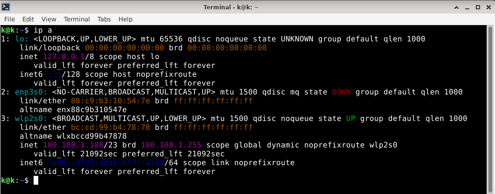
and replace the name enp3s0 with your own
sudo ethtool -i enp3s0Network card model
lspci -nn | grep -i ethernet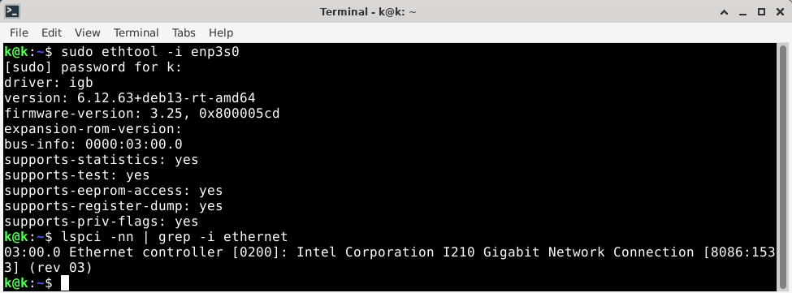
If the network card driver is named igb, igc, 1000, 1000e, or any of the others listed in ethercat.conf, we will try to connect it to the master instead of using the generic mode.
sudo geany /etc/ethercat.confIn this case, replace generic with:
DEVICE_MODULES="igb"Save and close
sudo systemctl stop ethercatsudo systemctl start ethercatWe check whether the card is Native/attached
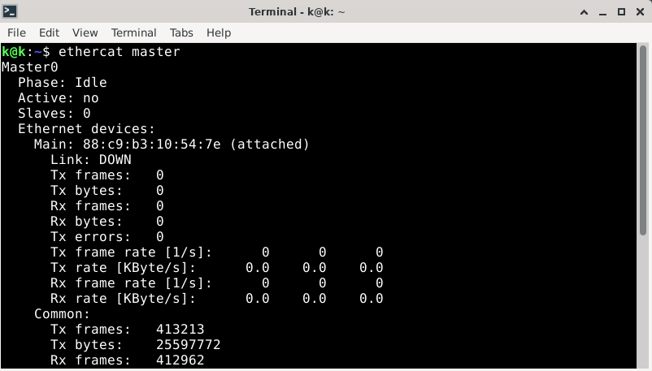
If not, return to ethercat.conf and save generic again.
6. Cia402.comp Installation
mkdir -p ~/dev
cd ~/dev
git clone https://github.com/dbraun1981/hal-cia402
cd hal-cia402
sudo halcompile --install cia402.comp
7. Custom Homing Installation
Install LinuxCNC source repositories
git clone https://github.com/LinuxCNC/linuxcnc.git linuxcnc-dev
Then copy homecomp:
cd ~/dev
git clone https://github.com/rodw-au/cia402_homecomp
5.1 Now you need to replace one line.
Without terminal, browse through the folders and find this file:
/home/..../linuxcnc-dev/src/emc/motion/homing.c
And copy its exact path.
Then enter the folder /home/dev/cia402_homecomp.
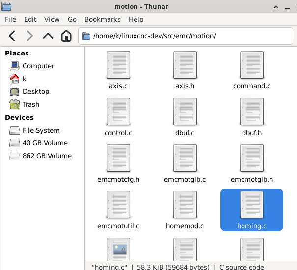
Open the file
cia402_homecomp.comp.Find this line and replace it with your own path:
#define HOMING_BASE home/..../linuxcnc-dev/src/emc/motion/homing.cand save.
Open a new terminal and enter:
cd ~/dev/cia402_homecompsudo halcompile --install cia402_homecomp.compAt a later stage, make sure that such an entry exists in the INI file:
[EMCMOT]HOMEMOD = cia402_homecompEnd
At this stage, all necessary components have been installed.
8. Starting LinuxCNC GUI
Start LinuxCNC from the terminal:
linuxcnc
Open the simulation, for example SIM Axis. This creates the folders where you can copy your
configuration.
Close the simulation after the folders have been generated.
Create your own configuration using generators, or copy a ready-made one for Lichuan LC-E servos, for example from
my GitHub:
https://github.com/szolkaa/Automatic-linuxcnc-config-generators-for-ethercat
Enter the folder linuxcnc/config/ and paste the complete configuration folder containing the
hal, ini, and xml files there.
Before the first LinuxCNC startup, you can check whether the shared memory segments are clean to avoid errors such
as:
rtapi_shmem_new failed due to shmget(key=0xacb572c7): Invalid argument
lcec_conf: ERROR: couldn't allocate user/RT shared memory
Check shared memory segments:
ipcs -m
If any entry shows a locked status, remove it with the number from the shmid column:
sudo ipcrm -m 32812
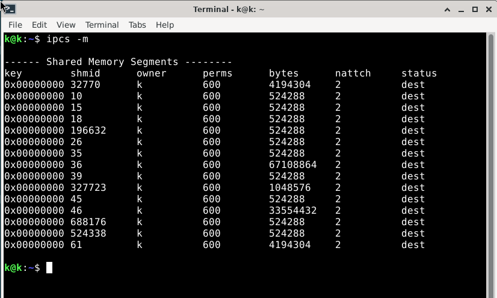
Restart the computer.
Now start LinuxCNC again:
linuxcncChoose a configuration.
After the program starts, you can connect the Ethernet cable and power on the servos.
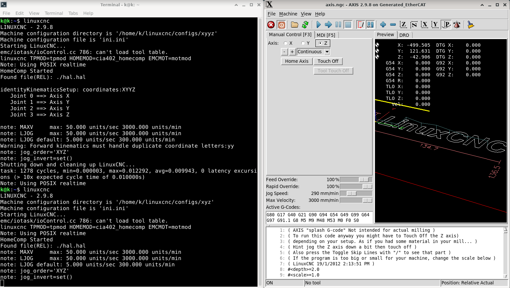
9. Machine Coordinate System (MCS)
In the custom homing component configuration, the Machine Coordinate System (MCS, G53) is established and based on the value 0 of each absolute encoder in the motor. When two motors operate together in the same plane, before homing in jog mode they should be set to the same encoder position—preferably each at 0.00—because the second motor Y2 will try to drastically align its position with the first Y. Only after that should Home Axis be activated.
It should also be remembered not to operate without Home Axis, because the soft limits are disabled and it is possible to move beyond the allowed area up to the first physical obstacle. Jog mode without Home Axis is intended only for safely retracting, for example, a tool from the material workspace.
Before installing the motors, homing to 0 or resetting the absolute encoder to 0 must be performed.
Open the MDI tab [F5] and enter:
G53 G0 Z0
then:
G53 G0 X0 Y0
or:
G53 G0 X0 Y0 Z0
The easiest way is to reset the absolute encoder position directly in the servo drive settings according to the manual, or turn the nut on the screw close to one end, and when the encoder is at position 0, connect the ball screw to the motor.
Set the HAL file resolution and the desired movement direction of the screw by adding - to each joint,
for example:
setp cia402.0.pos-scale 1677721.6
or:
setp cia402.0.pos-scale -1677721.6
Then measure how much safe travel remains to the end of the screw and set these values in the INI file, depending on
the direction of the screw, for example:
MIN_LIMIT = -1
MAX_LIMIT = 545
10. Work Coordinate System (WCS)
The same WCS, G54, is a work coordinate system set relative to the workpiece. It allows you to define the workpiece zero point (0,0,0) and perform tool movements relative to it. The same point is defined in the CAM program; usually, the corner, center, or a hole on the top surface of the raw material is chosen.
The basic method for defining the workpiece zero point is to directly position the tool tip in the X and Y planes above the physical material at the location specified in the CAM program, and then move the Z axis downward. Sometimes a small gap between the tool and the surface is used, for example using a sheet of paper, and the paper thickness is taken into account during the touch off.
For each axis, select Touch Off P1 (G54)=0. This assigns the current XYZ axis positions to the WCS.
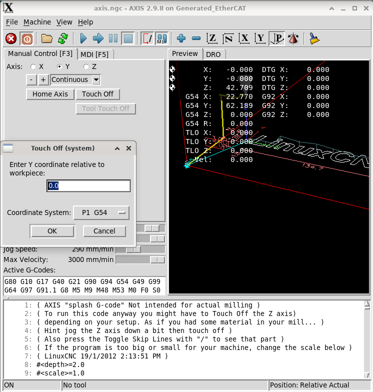